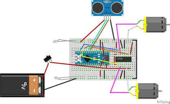

Obstacle Avoiding RC
Hardware Requirement
Electronics Component
Hardware Specification
Arduino Nano

Arduino Nano
Specification
DC 3-6v BO Gear Motor with Plastic Tire Wheel

DC 3-6v BO Gear Motor with Plastic Tire Wheel
Features
Specification
Ultrasonic sensor

Ultrasonic sensor

Distance Calculation
Robot Chassis
Robot Chassis
Connection Diagram
Connection Diagram Obstacle Avoiding Robotic Car
Limitations
Application
Software Requirement
Programming Arduino Nano
Complete program with a demonstration video is given at the end of this project. The program will include setting up HC-SR04 module and outputting the signals to Motor Pins to move motor direction accordingly. No libraries will be used in this project.
First define trig and echo pin of HC-SR04 in the program. In this project the trig pin is connected to GPIO9 and echo pin is connected to GPIO10 of Arduino NANO.
int trigPin = 9; // trig pin of HC-SR04 int echoPin = 10; // Echo pin of HC-SR04
Define pins for input of LM298N Motor Driver Module. The LM298N has 4 data input pins used to control the direction of motor connected to it.
int leftmotrev4 = 4; //Left motor REVerse rotation int leftmotfor5 = 5; //Left motor ForWarD rotation int rightmotrev6 = 6; //Right motor REVerse rotation int rightmotfor7 = 7; //Right motor ForWarD rotation
In setup() function, define the data direction of utilised GPIO pins. The four Motor pins and Trig pin is set as OUTPUT and Echo Pin is set as Input.
pinMode(leftmotrev4, OUTPUT); // set Motor pins as output pinMode(leftmotfor5, OUTPUT); // set Motor pins as output pinMode(rightmotrev6, OUTPUT); // set Motor pins as output pinMode(rightmotfor7, OUTPUT); // set Motor pins as output pinMode(trigPin, OUTPUT); // set trig pin as output pinMode(echoPin, INPUT); //set echo pin as input to capture reflected waves
In loop() function, get the distance from HC-SR04 and based on the distance move the motor direction. The distance will show the object distance coming in front of the robot. The Distance is taken by bursting a beam of ultrasonic up to 10 us and receiving it after 10us.
digitalWrite(trigPin, LOW); delayMicroseconds(2); digitalWrite(trigPin, HIGH); // send waves for 10 us delayMicroseconds(10); duration = pulseIn(echoPin, HIGH); // receive reflected waves distance = duration / 58.2; // convert to distance delay(10);
If the distance is greater than the defined distance means there is not obstacle in its path and it will moving in forward direction.
if (distance > 19)
{
digitalWrite(rightmotfor7, HIGH); // move forward
digitalWrite(rightmotrev6, LOW); // move backward
digitalWrite(leftmotfor5, HIGH) // move forward;
digitalWrite(leftmotrev4, LOW); // move backward
}
If the distance is less than the defined distance to avoid obstacle means there is some obstacle ahead. So in this situation robot will stop for a while and movebackwards after that again stop for a while and then take turn to another direction.
if (distance < 18)
{
digitalWrite(rightmotfor7, LOW); //Stop
digitalWrite(rightmotrev6, LOW);
digitalWrite(leftmotfor5, LOW);
digitalWrite(leftmotrev4, LOW);
delay(500);
digitalWrite(rightmotfor7, LOW); //movebackword
digitalWrite(rightmotrev6, HIGH);
digitalWrite(leftmotfor5, LOW);
digitalWrite(leftmotrev4, HIGH);
delay(500);
digitalWrite(rightmotfor7, LOW); //Stop
digitalWrite(rightmotrev6, LOW);
digitalWrite(leftmotfor5, LOW);
digitalWrite(leftmotrev4, LOW);
delay(100);
digitalWrite(rightmotfor7, HIGH);
digitalWrite(rightmotrev6, LOW);
digitalWrite(leftmotrev4, LOW);
digitalWrite(leftmotfor5, LOW);
delay(500);
}
So this is how a robot can avoid obstacles in its path without getting stuck anywhere.